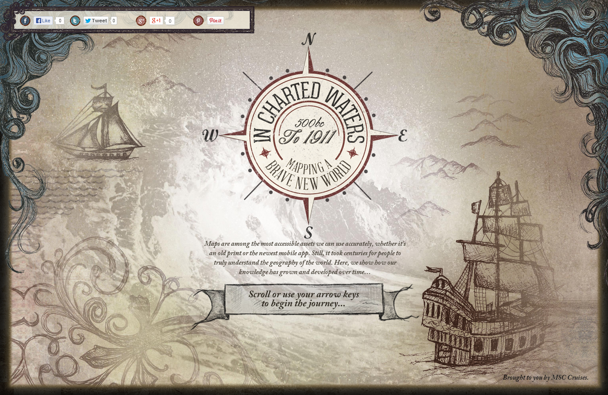

Grunt - Your New Best Friend
The Benefits
- Saves time
- Collaborative working
- Good for forgetful people
- Evolving
- It's cool
The Story So Far
- Ryan the Presenter
- Griff the Repo Man
- Chris the Brancher
- You the Developer
What Can It Do?
A small selection of Grunt's capabilities include:
- Adding in HTML snippets (e.g. Bugherd)
- Setting up a Bitbucket repo
- Adding vendor prefixes to CSS
- Compiling SASS into CSS
- Minifying and uglifying code
- Uploading files to Stratus
- ...
But Does It Work?
It won't replace your (dazzling) code. But it will make your work process less annoying.
Integral part of several recent projects...
- Sky Bet
- Ebuyer
- Family Investments
- MSC Cruises
Sky Bet
Ebuyer
Family Investments
MSC Cruises
FAQs
Will it do x, or y, or make the coffee?
Probably, probably, and no. We think the boilerplate we've set up is ace, but it's for us all, so comments, pull requests, branches, commits, all are welcome!
Do I have to become some sort of command line wizard?
No, but most of you are anyway. I can do it and I am scared of terminal windows.
Do I have to use it?
No. But you'll probably want to when you see what it can do.
Can I see it working?
Sure.
If your demo breaks, does that mean it's rubbish?
No, it just means it needs more testing.
Live Demo Time
Fingers crossed...